The R-201 Carbine was manufactured by Lastimosa Armory sometime between the Battle of Demeter and Operation: Broadsword to serve as the successor to the R-101C Carbine. Although the R-101C was still utilized by combatants around this time, the newer R-201 became the favored rifle among the Frontier and soon became a standard issue rifle among the Interstellar Manufacturing Corporation and Frontier Militia during the Frontier War.
Armes Principales
Fusils d'assaut
R-201
R-101C
The R-101C Carbine was manufactured by Lastimosa Armory. It was the replacement for the older G2A4 Battle Rifle in the hands of the IMC, soon becoming the standard rifle used across the Frontier. Eventually, the rifle would breed three similar weapon systems based off the design - the R-201 Assault Rifle, the D-101 Longbow-DMR , and the R-97 Compact SMG.
Hemlok BF-R
The Hemlok BF-R is a heavy burst-fire assault rifle employed by both IMC and Militia forces fighting on The Frontier. Although not as commonly seen as the more standard R-101C Carbine and R-201 Assault Rifle, the Hemlok is still a relatively common sight amongst the hands of Pilots, Grunts and Spectres alike. Its integrated CPU can fire controlled bursts from two, three, five or to a full magazine dump in one trigger pull.
G2A5
The G2A5 emerges after the Battle of Demeter as a successor to the G2A4. As the previous iteration was popular among pilots who wanted to have more versatility at ranges between the ARs and Snipers, another model was made. The changes made to the weapon have been minor, with upgrades to its rear diopter and ergonomic improvements.
V-47 Flatline
It features a collapsible frame similar to that of the R-101C Carbine and R201 Assault Rifle, most likely to aid with transportation inside Titans and other vehicles. The rifle is commonly seen utilized by Militia Grunts, including those of the 41st Militia Rifle Battalion, as a standard weapon. However, they have also been found in the hands of IMC Marines as well. Instead of having normal up-and-down recoil, it recoils side-to-side.
Mitraillette
Car
The C.A.R. SMG is one of the two submachine guns developed from the R-101C Carbine platform, though unlike the R-97, it has far greater power, able to kill in one less shot at all ranges. Unfortunately, though, this is at the expense of fire rate, range and capacity. This makes the weapon a hybrid between the R-101C Carbine and R-97 Compact SMG, dealing similar damage to the former, with a slower rate of fire than the latter.
Alternateur
The Alternator Submachine Gun (SMG), or simply the Alternator, and non-canonically referred to as the SP-14 Hatchet in concept art, is a twin-barrel submachine gun.The Alternator SMG was first made by Emslie Tactical. This was their first Submachine gun produced, and the only known weapon from the company. While it was the first Submachine gun made by Emslie, it was groundbreaking for its time, as it was the first submachine gun to use more than one barrel to fire.
Volt
The Volt Submachine Gun (SMG), or simply the Volt, is a energy submachine gun featured in Titanfall 2 and Apex Legends. It is a weapon that fires concentrated bolts of high energy, which are referred to as 'blue tracers'.[1] Despite this making the weapon very effective In medium to close range engagements, at long range these blue tracers can very easily give your position away.
R-97 (my beloved)
The R-97 is a compact submachine gun that excels in close-quarters combat due to its high fire rate and magazine size. It has the fastest fire rate out of all primary weapons; this, coupled with its large magazine size make it perfect for clearing entire squads in confined spaces. Despite this, it has very low damage output per shot, taking 5 to 6 shots to take down Pilots. Its very short effective range and high weapon kick make it ill suited for combat beyond the shortest of ranges, although burst firing can improve accuracy.
Mitrailleuse légère
spitfire
The Spitfire LMG has high recoil at first, but it eventually stabilizes into a tighter firing pattern. Due to its unique recoil, players are advised to ignore the traditional method of firing in short bursts, and rather fire in long bursts for increased effectiveness. It boasts extremely high damage for a non-long-range weapon, downing a pilot in no more than 3 shots or 2 headshots. It is one of the most useful guns to use when rodeoing a Titan, as it takes less than one belt to fully destroy it.
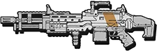
L-Star
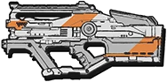
The L-STAR is a rapid fire particle accelerating energy light machine gun. It fires red particle bolts at a moderate speed at the target. Targets hurt by the weapon will have red energy swirling around them for a few moments, and if killed, their bodies will explode as if hit by an explosive. It performs at 45 damage and 34 accuracy. Its listed magazine size is the amount of rounds the weapon can fire in succession before it completely overheats, in which case a reload animation plays where the upper receiver pops open while the pilot fans the inside to disperse the heat, then replaces several parts in the stock and barrel, most likely a melted component and a battery.
X-55 Dévotion
The Devotion presumably was made by Wonyeon Defense, as it has a similar design to the second iteration of the Hemlok BF-R that was made by them after the Battle of Demeter. It was rather unique for its time, as it was the first ever pilot weapon that used an RPM ramp-up mechanic. The fast fire rate made it a popular option with pilots who wanted an alternative to the Spitfire that ripped through targets almost instantly, thus being employed as a weapon used in the Frontier War.
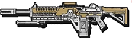
fusils de précision
Kraber-AP
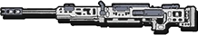
The Kraber is an exceptionally bulky weapon and it handles as such, with slow weapon handling and long reload times. It does however have immense power, in that it is capable of outright killing any human-size enemy with a single round. Rounds fired by this weapon have a considerable arc and travel time, both of which must be taken into account beyond close range engagements. It takes true skill to effectively wield a Kraber, and it is this trait that endears the rifle to many players.
D-2 à double tir
The Double Take is a twin-barrel marksman rifle. The shots are fired side by side, and the default sights have two chevrons, indicating where the shots will land. This is contrary to the Longbow and Kraber which do not come with iron sights. It also comes with a bullpup magazine in the back of the weapon.
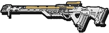
fusils de précision
Kraber-AP
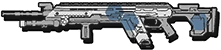
The D-101 Longbow-DMR (Designated Marksman Rifle) Sniper Rifle, or simply the Longbow-DMR (or Longbow DMR), Longbow, or DMR, is a Pilot semi-automatic sniper rifle manufactured by Lastimosa Armory that appears in Titanfall, Titanfall 2 and Apex Legends. The Longbow is a variant of the R-201 Assault Rifle, modified into a marksman rifle role
Fusils à pompe
EVA-8 Auto
The weapon was developed from the ground up by Wonyeon Interstellar to provide the IMC Orbital Guard Raiding Parties (aka Shipwreckers) with devastating CQB firepower. The EVA-8 has also been widely used by the Frontier Militia and Badlands Pirates, often acquiring the weapons by raiding remote supply convoys to the Outer Colonies. When in need of massive firepower during first contact, Pilots look no further than the EVA-8. The EVA-8 Shotgun is an autoloading shotgun that deals great damage up close. It has an "8" shaped pellet spread, hence the name "EVA-8"
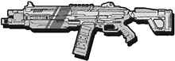
Mastiff
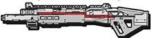
The Mastiff can be considered easy to use, yet difficult to master. On one hand, it boasts several outstanding characteristics, such as low falloff, high range and damage, and (perhaps most uniquely), a completely flat spread. On the other hand, it is not without its drawbacks - a slight, yet noticeable travel time, a low magazine size of four rounds, and a delay between shots to compensate for the high recoil. It's possible to miss shots even at close range by forgetting to take travel time into account.
Grenadier
Sideweinder SMR
The Sidewinder is an anti-Titan weapon that makes it easy for the Pilots to damage enemy Titans. The micro-missiles do limited damage, but may do critical damage by hitting vulnerable spots. It has a rather high fire rate with a high magazine capacity to boot. It should be advised that it is useless when rodeo attacking a Titan, because the missiles will explode on impact, killing the pilot. It is mainly effective at close range where it can hit vulnerable spots and deal critical damage. It is less effective at medium range, where it can at least hit an enemy. For long range, other anti-titan weapons are preferable.
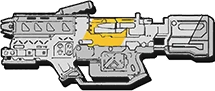
EPG-1
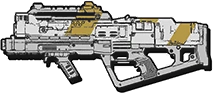
The Mastiff can be considered easy to use, yet difficult to master. On one hand, it boasts several outstanding characteristics, such as low falloff, high range and damage, and (perhaps most uniquely), a completely flat spread. On the other hand, it is not without its drawbacks - a slight, yet noticeable travel time, a low magazine size of four rounds, and a delay between shots to compensate for the high recoil. It's possible to miss shots even at close range by forgetting to take travel time into account.
R-6P Softball
The R-6P Softball Anti-Armor Grenade Launcher (AAGL) is a rotary magazine, Pilot-operated, anti-Titan grenade launcher. It is lightweight and stowable, which allowed its operator to quickly fire and maneuver. Multiple types of rounds can be fired from the weapon such as HE, EMP, Smoke, Tracer and High-Density Slugs - though only sticky grenades can be fired in-game. It can be utilized with direct or indirect fire modes which allow for varied firing patterns and combination attacks. Rugged, reliable and its simple design make the AAGL Softball a highly effective anti-Titan weapon. The Softball's munitions have the ability to stick to targets and surfaces, and detonate a short time after impact.
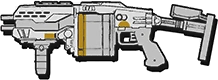
Mitrailleuse EM-4 CW
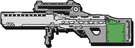
The EM-4 Cold War, or simply the Cold War, is a primary four-round burst bullpup grenade launcher manufactured by Vinson Dynamics, firing 4.73x33mm explosive ammunition. The weapon requires to be charged before firing, though unlike the Charge Rifle the player simply has to press the trigger to start charging followed by the gun firing instead of holding the trigger down to fire.
Pistolets
Wingman Elite
The Wingman Elite has higher damage than the regular Wingman, however this is counteracted somewhat by the fact that it is not hitscan, and requires players to lead targets slightly. As such, it is capable of one-hit-killing enemy Pilots, provided the hit is a headshot.
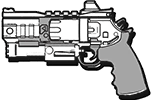
SA-3 Mozambique
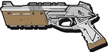
The EM-4 Cold War, or simply the Cold War, is a primary four-round burst bullpup grenade launcher manufactured by Vinson Dynamics, firing 4.73x33mm explosive ammunition. The weapon requires to be charged before firing, though unlike the Charge Rifle the player simply has to press the trigger to start charging followed by the gun firing instead of holding the trigger down to fire.
Smart Pistol
As a Boost, the Smart Pistol is a one-use powerup that can be activated at 60% of the player's Titan meter. Unlike every other weapon, (besides Secondary Anti-Titan weapons) the Smart Pistol only has one spare magazine, for a total of 24 rounds. The lock-on speed is now governed by both distance from the target, and distance between the target and the center of the lock-on reticle. The Smart Pistol now alerts the target that they are being locked-onto, making it easier to evade.
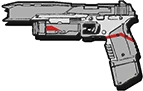
Armes secondaire et anti titan
RE-45 Auto
The RE-45 Autopistol is a .45 caliber pistol intended for use at close range. It loses damage and accuracy over long distances, so it is not as suitable for medium to long ranges as the Hammond P2011 or B3 Wingman. However, this weapon is best used when sneaking up on unsuspecting players with the use of Cloak, since it still retains maximum damage at close range; just make sure the victim doesn't turn around though.
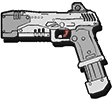
Gammond P2016
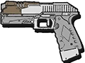
The Hammond P2016, or simply the P2016, is a sidearm manufactured by Lastimosa Armory that appears in Titanfall 2. It is essentially an upgraded variant of the Hammond P2011 from Titanfall. Like its predecessor, the P2016 is a Semi-Automatic Handgun with a magazine size of 12 rounds. Unlike its predecessor, however, it can be modified in the same manner as a primary weapon, with multiple attachments and camouflage at the disposal of the user. To this end, the weapon can have an extended magazine that brings the magazine size up to 16 rounds.
Wingman
The B3 Wingman only takes two shots to the body or one to head to kill an enemy Pilot. The other sidearms take at least four shots to the body or three to the head. If you can become accurate with this weapon, it is a beastly sidearm. Use this weapon only if your primary is running low or out of ammo. It’s a great one to catch a Pilot off guard in close quarters.
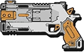
Armes anti titan
Fusil à charge
The Charge Rifle was made by Wonyeon Defense as a weapon to fight Titans. Since it was capable of reaching Titans from afar with its hitscan projectile and capable of dealing great damage when charged up from any range, this instantly became a necessity upon factions that took part in the Frontier War.
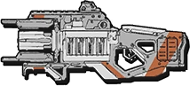
Lanceur magnétique LGM
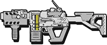
The Hammond P2016, or simply the P2016, is a sidearm manufactured by Lastimosa Armory that appears in Titanfall 2. It is essentially an upgraded variant of the Hammond P2011 from Titanfall. Like its predecessor, the P2016 is a Semi-Automatic Handgun with a magazine size of 12 rounds. Unlike its predecessor, however, it can be modified in the same manner as a primary weapon, with multiple attachments and camouflage at the disposal of the user. To this end, the weapon can have an extended magazine that brings the magazine size up to 16 rounds.
Thunderbolt LG-97
he LG-97 Thunderbolt is an anti-Titan energy projector that fires a large, slow-moving ball of electricity that causes damage to any unit within a wide radius around its flight path. Upon striking a target, it explodes in a spherical blast, which can hurt the pilot if accidentally fired point-blank. Targets affected by the Thunderbolt suffer a disruption to their sight similar to that caused by an Arc Grenade or a Monarch's Energy Siphon, though the effect is very short-lived.
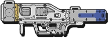
Archer
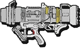
The Archer Heavy Rocket launcher is a multi-role rocket launcher employed by infantry on the Frontier. It has several main firing modes - the primary of which requiring the user to acquire a single lock-on, before firing a self-guided missile that will then seek the locked target automatically. However, the launcher also supports dumb-fire(firing the missile without need for a lock) and mortar fire modes, for increased versatility in the field.